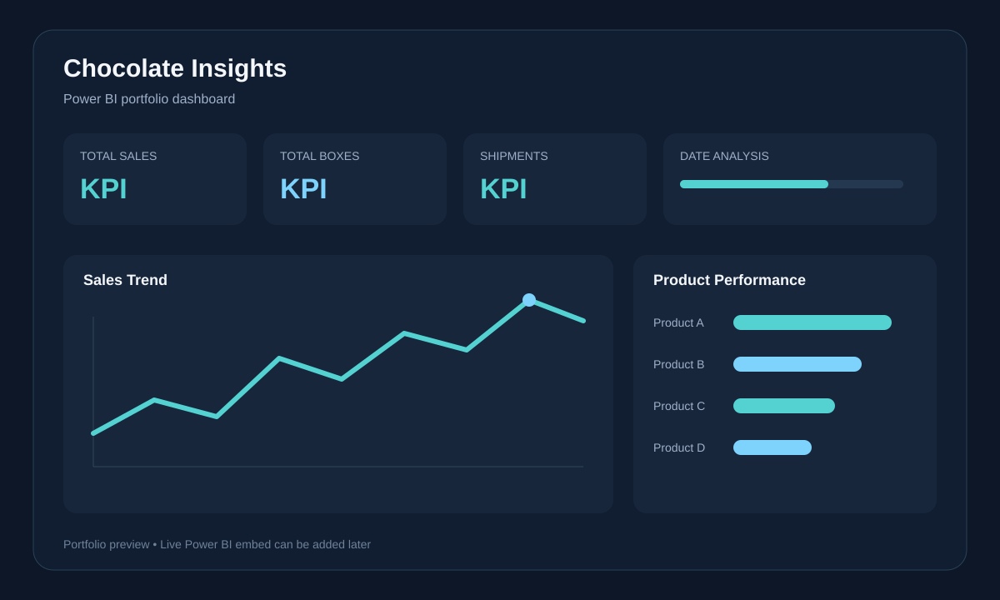

Analytics & BI
Power BI, Tableau, Excel, KPI reporting, dashboard design, forecasting and data storytelling.
DATA ANALYST · SQL · POWER BI · PYTHON
I'm Bhavan Chandupatla, an MSc Data Science graduate from Coventry University. I build practical analytics solutions using SQL, Power BI, Python and Excel — from data cleaning and modelling to dashboards, KPI reporting and insight generation.
ABOUT
My work focuses on solving business questions with data. I enjoy taking a dataset from raw records to a finished result: cleaning it, checking quality, modelling relationships, writing calculations and presenting the findings in a way that is useful to decision-makers.
This portfolio brings together my SQL investigations, Power BI dashboards and data science work. Each project is designed to show not only the final visual, but also the reasoning, technical approach and business insight behind it.
TOOLKIT
Power BI, Tableau, Excel, KPI reporting, dashboard design, forecasting and data storytelling.
SQL, MySQL, PostgreSQL, joins, CTEs, subqueries, window functions, aggregation and troubleshooting.
Python, Pandas, exploratory data analysis, data cleaning, statistics and machine learning foundations.
Power Query, star schemas, relationships, DAX measures, time intelligence and interactive report design.
FEATURED WORK
A database investigation project where I followed clues across related tables, filtered evidence and connected records using SQL joins and query logic to identify the suspect.
A polished Power BI dashboard that turns sales activity into a concise executive view, combining headline KPIs, time trends, product performance and interactive date analysis.
My MSc Data Science dissertation at Coventry University: a machine-learning study combining multiple datasets, exploratory analysis and model comparison to identify and predict job-market trends.
POWER BI
A portfolio preview of my Power BI work. A live interactive report can be embedded here later using a portfolio-safe public dataset.

Executive-style KPI reporting, trend analysis and product performance designed for clear business storytelling.
HOW I WORK
Clarify the business question and the decision the analysis needs to support.
Clean, validate and structure the data so the analysis can be trusted.
Use SQL, DAX, Python or Excel to identify patterns, drivers and exceptions.
Turn the result into a dashboard or concise insight that is easy to act on.
CONTACT
I'm open to Data Analyst and Data Insights Analyst opportunities in the UK.
Portfolio: bhavananalyst.com · GitHub: @bhavanchandupatla123